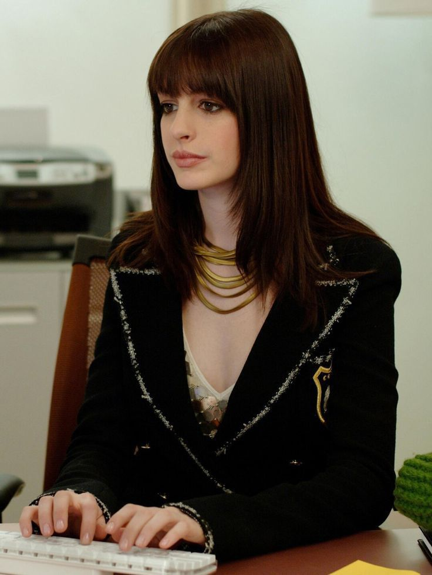
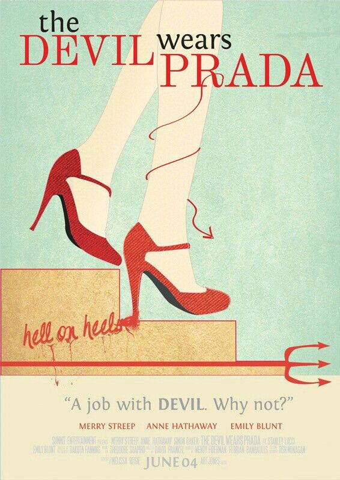

Comedy, Drama
2006
109 minutes
David Frankel
The Devil Wears Prada follows aspiring journalist Andy Sachs, who lands a job as the assistant to Miranda Priestly, the powerful editor-in-chief of a leading fashion magazine. As Andy adapts to the demanding world of high fashion, she faces challenges that test her values, ambitions, and relationships.